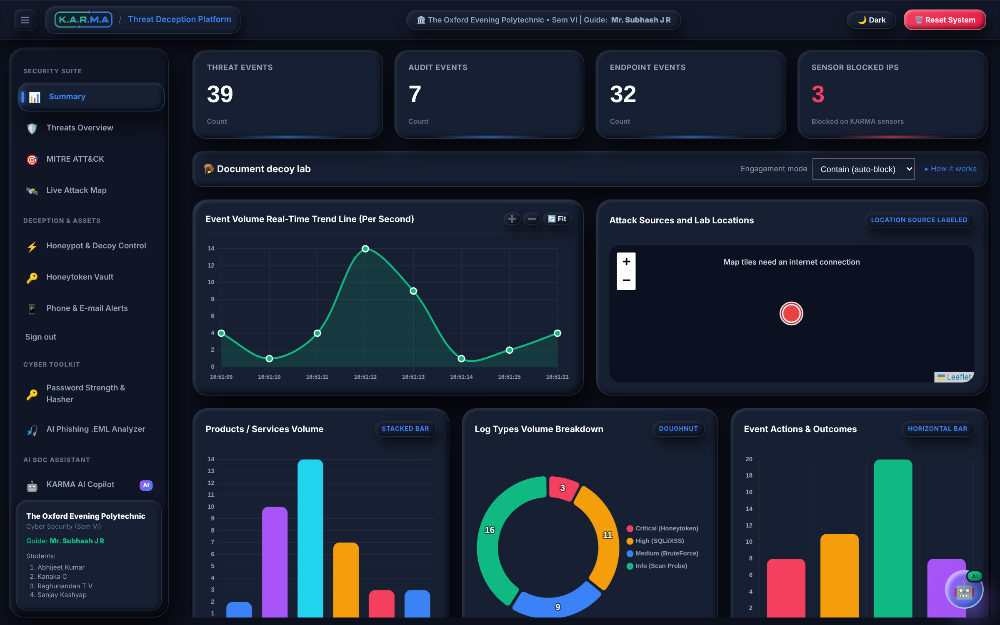
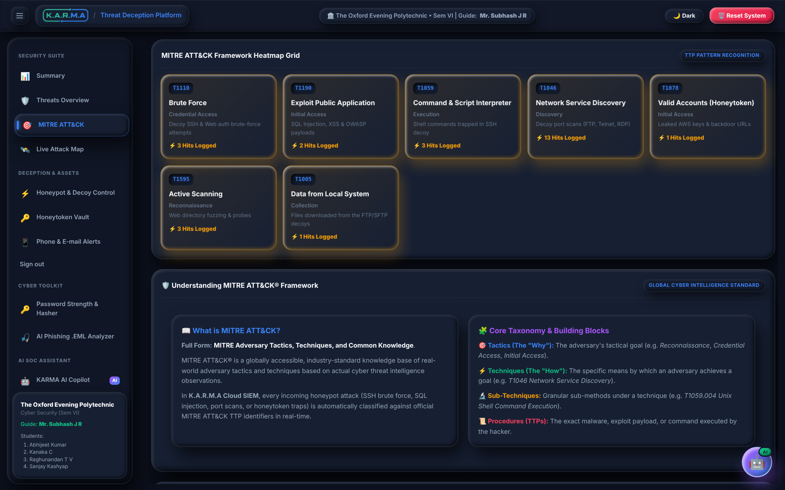
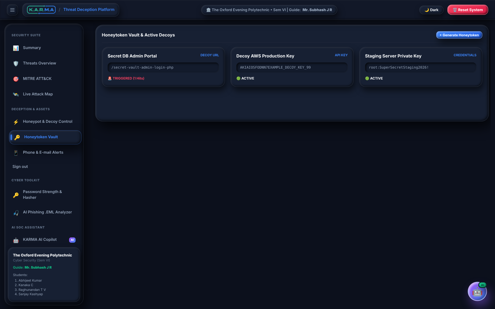
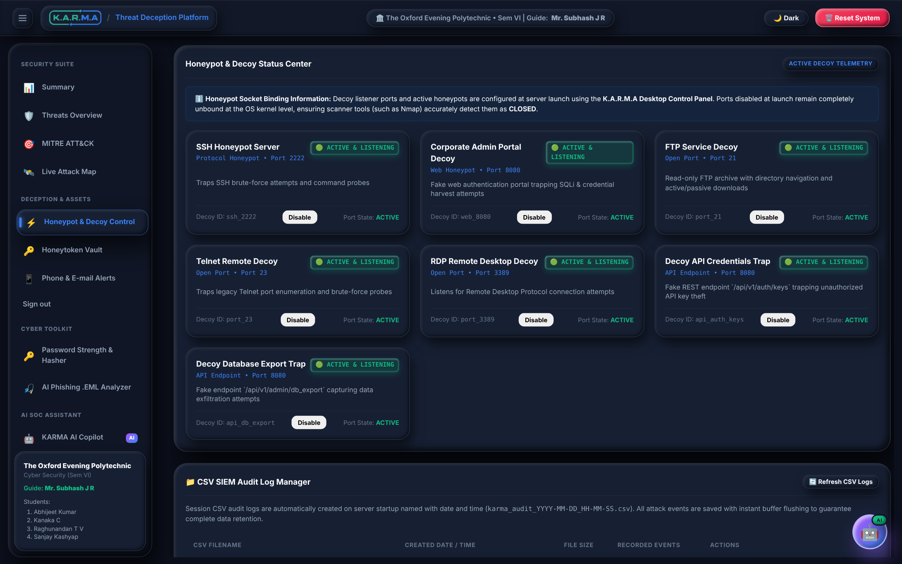
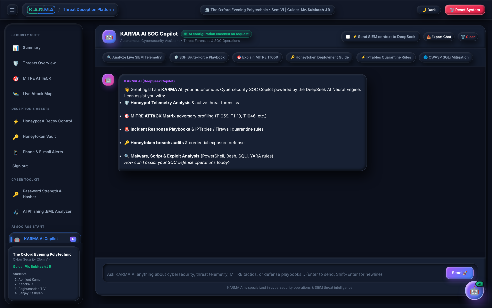
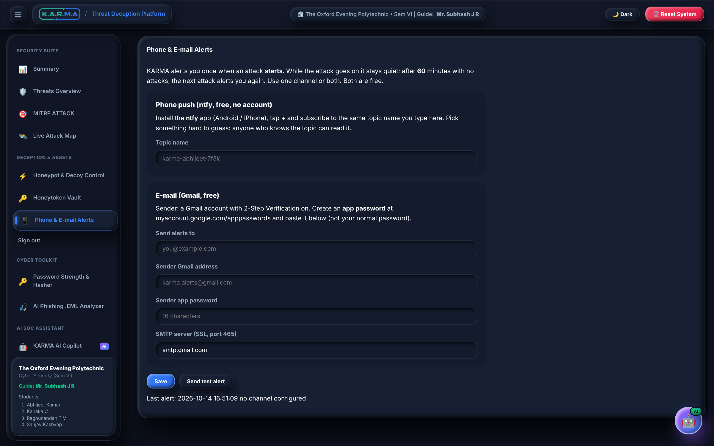
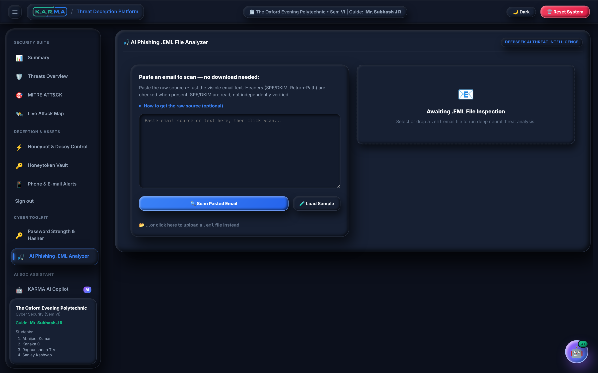

The attack that
returns to its sender.
A honeypot-based threat deception platform. It doesn't build a higher wall — it lays a more tempting trap.
The problem
Every wall we build,
someone already walked past.
In 2025 and 2026, some of the largest and best-defended organisations on earth were breached — not through the front gate, but through a stolen password, a trusted supplier, or a weakness nobody was watching.
Recent breaches · the headlines
This happened. To real companies. Recently.
It is not somewhere else · India, now
The same week, the same country, the same risk.
The number that should scare everyone
IBM Cost of a Data Breach Report 2025 · global average cost $4.44M · U.S. average $10.22M
Why a firewall and antivirus are not enough
A wall stops what it knows.
It never sees who is already inside.
Verizon 2025 Data Breach Investigations Report · 12,195 breaches analysed
The shift
Stop building higher walls.
Start laying better traps.
A firewall is passive — it waits to be attacked. A honeypot is active: a decoy that looks more valuable than the real thing, so attackers reach for it first. The moment they touch it, you know. There is no false alarm — nobody has a reason to touch a decoy except an intruder.
How a honeypot works
The attacker aims at the real server. The decoy pulls the attack into itself.
1 · LureDecoys that look like real servers, files and logins sit in the network, deliberately more tempting than production.
2 · TrapThe first thing an attacker touches is the decoy. Every keystroke is logged; the real systems are never reached.
3 · ContainThe attacker is profiled, scored against MITRE ATT&CK, and quarantined — while you get alerted.
Before it is too late
KARMA
A single-host honeypot & threat-deception platform that turns your own network into the trap.
What the name means
Kanaka · Abhijeet · Raghunandan
Monitoring & Active Cyber Deception
In security, karma means an adversary's own attack probes return straight back to trap, profile and isolate them — automatically.
The headline feature · live, on screen
Watch the attack get pulled off course.
Real recording. Each attack starts aimed at the production server, then the honeypot's pull bends it into the trap. The production server is never touched.
The command centre
One dashboard. Every attack, as it lands.
Live event counters
Threat, audit and endpoint events update the moment a probe hits a decoy.
Real-time trend & breakdown charts
Event volume per second, severity doughnut, and action-outcome bars — all live.
Contain vs Observe
Flip one control between auto-blocking attackers and quietly watching them explore.


Spoken in the language of real defenders
Every attack, mapped to MITRE ATT&CK.
Automatic classification
SSH brute-force → T1110, SQL injection → T1190, honeytoken use → T1078, and more.
A live heatmap
Techniques light up as they're seen, with a running hit count per technique.
The global standard
The same framework professional SOC teams use — not invented terminology.
Bait that bites back
Fake keys & credentials that betray the thief.
Planted secrets
A decoy AWS key, a fake admin URL, staging credentials — left where an attacker will find them.
Detected on use
The instant a stolen token is used, KARMA knows it was taken from a decoy — a zero-false-positive alarm.
Your own tokens
Generate and manage custom honeytokens from the vault at any time.


The traps themselves
Five decoy services. All fake. All convincing.
SSH, Web, FTP, Telnet, RDP
Each pretends to be real; commands are never executed on the host.
Toggle any trap live
Disabled decoys unbind at the OS level, so scanners correctly see them as closed.
A fake file server
Attackers can browse and download decoy company files over SSH & FTP — every download is logged.
An analyst that never sleeps
AI SOC copilot, grounded in your live telemetry.
Full context
The copilot always has every logged attack, attacker and honeytoken hit in view.
Works offline too
With no API key, an offline analyst still answers from live data — no internet required.
Forensic reports
One click produces a rule-based incident report for any attacker IP.


You find out first
A real attack buzzes your phone.
Push & e-mail
Free phone push via ntfy and e-mail via Gmail — set up right inside the dashboard.
Smart, not spammy
One alert when an attack starts; silence while it continues; a fresh alert only after it stops for an hour.
Adversary profiler
Every attacker gets a forensic profile, risk score and one-click quarantine.
Bundled cyber toolkit
A SOC desk, not just a honeypot.
AI phishing .EML analyzer
Drop in a suspicious e-mail; KARMA scores it and flags the tells.
Password strength & hasher
Live strength meter plus SHA-256 / SHA-512 / MD5 hashing.
Document decoy lab
Per-session tracked decoy documents that phone home when opened.

Under the hood · how it fits together
From a raw TCP probe to a push notification — one flow.
The technicalities · backend
Python, built for real network traffic.
API & server
- FastAPI — authenticated dashboard & REST API
- Uvicorn — ASGI server, loopback-only in dev
- WebSockets — live telemetry to the browser
- Pydantic — request validation at every boundary
The honeypots
- Paramiko — a real SSH/SFTP server; commands never run on the host
- Raw sockets — FTP, Telnet & RDP decoys with exclusive binds
- Virtual shell — a fake filesystem the attacker explores
Data & security
- SQLite — event store + CSV audit segments
- cryptography · bcrypt · PyNaCl — TLS certs, hashing, keys
- pypdf — per-session tracked decoy documents
The technicalities · frontend & intelligence
A production-grade console, no framework bloat.
Interface
- Vanilla JS — fast, dependency-light dashboard
- Claymorphism UI — custom design system, light & dark
- CSRF-guarded fetch & 8-hour sessions
Visualisation
- Chart.js — live trend, doughnut & bar charts
- Leaflet — attacker map on Esri satellite tiles
- SVG + CSS — the live attack-map animation
Intelligence
- DeepSeek — the free-form AI SOC copilot
- Offline analyst — rule-based fallback, no internet
- MITRE mapper & dynamic threat-scoring engine
KARMA, by the numbers
Thank you.
Kanaka C · Security Analyst & Frontend
Raghunandan T V · Backend
Sanjay Kashyap · Team
Guided by Mr. Subhash J R · The Oxford Evening Polytechnic
Q&A
Ask us anything — the honeypot is still running.